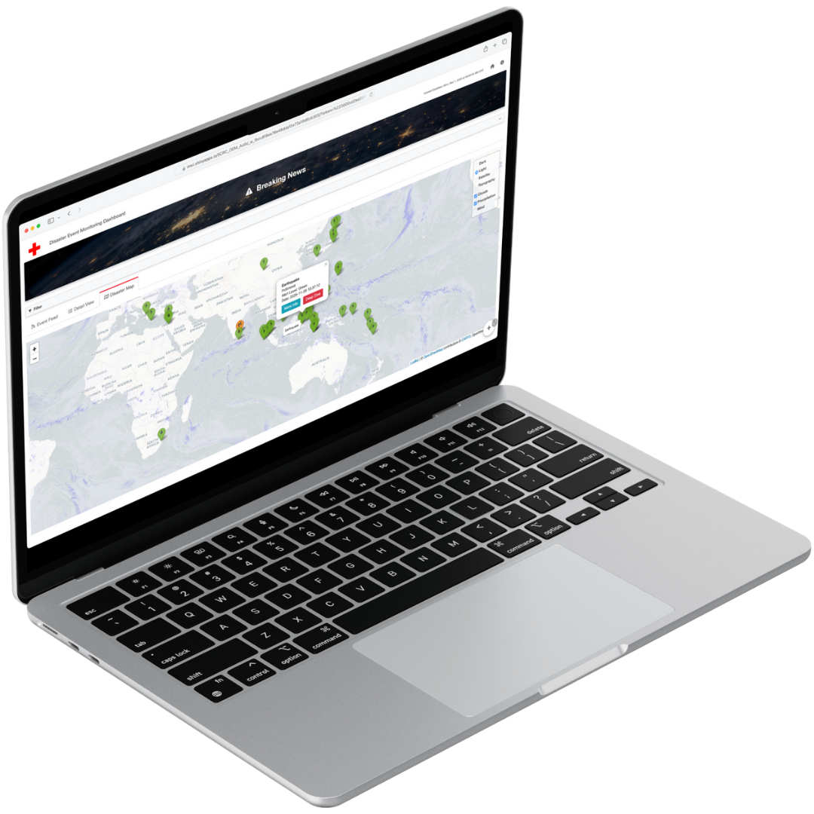

Disaster Mitigation Dashboard
Partner: Singapore Red Cross Society
We developed a real-time Disaster Mitigation Dashboard that enables humanitarian teams to monitor natural hazards across the globe. The platform brings together key data, alerts, and trends in one accessible interface, helping organizations anticipate risks, plan ahead, and coordinate responses more effectively.
By improving situational awareness and decision-making, the dashboard empowers NGOs to respond faster, allocate resources more efficiently, and ultimately save more lives.